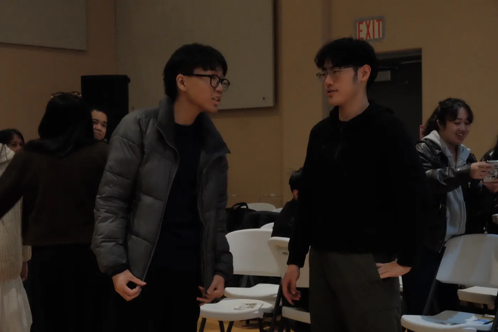
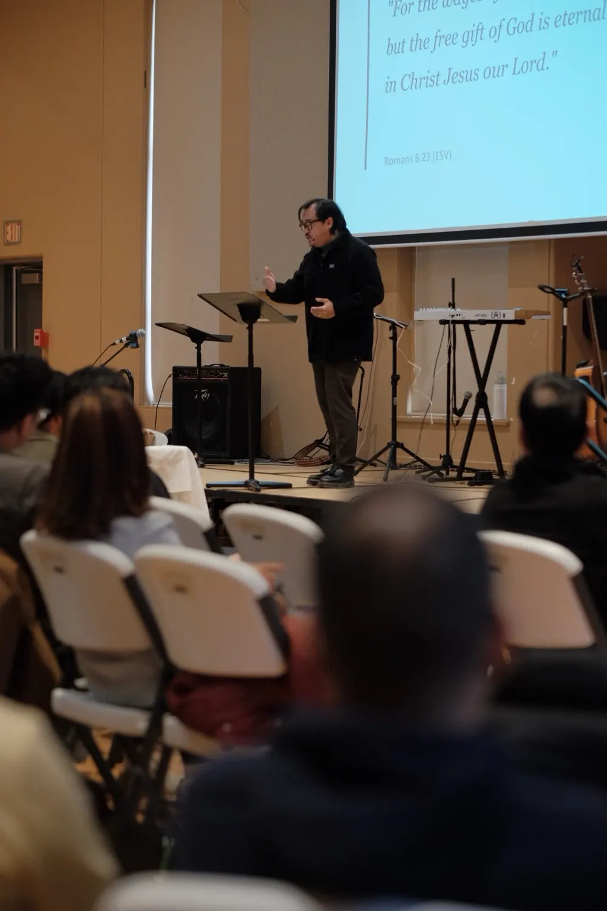
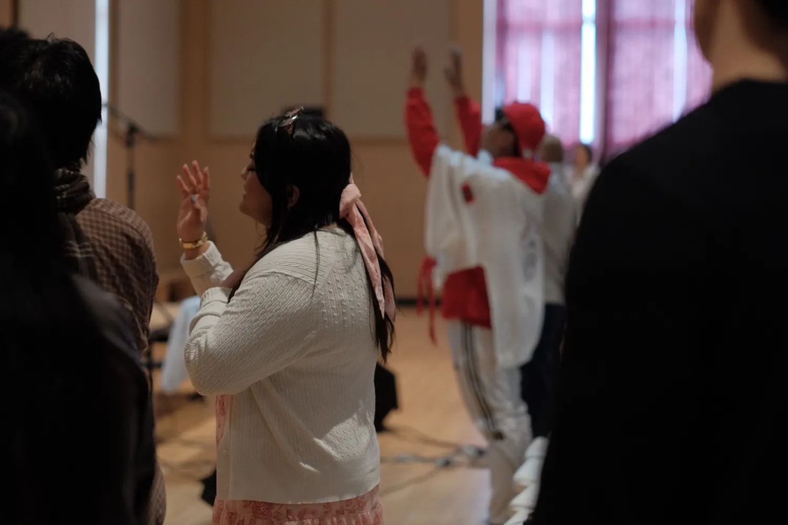
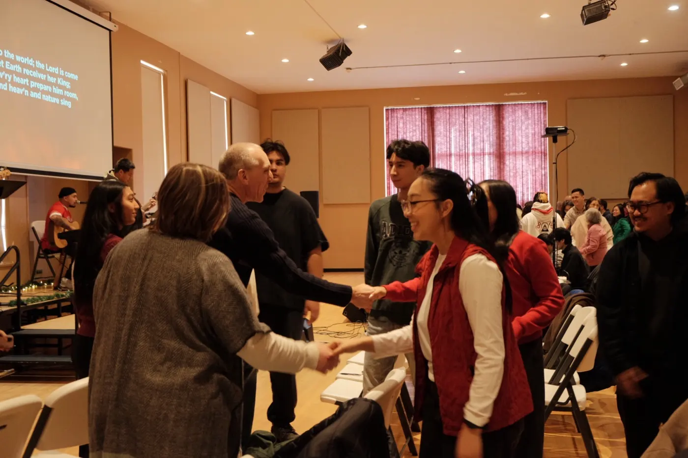
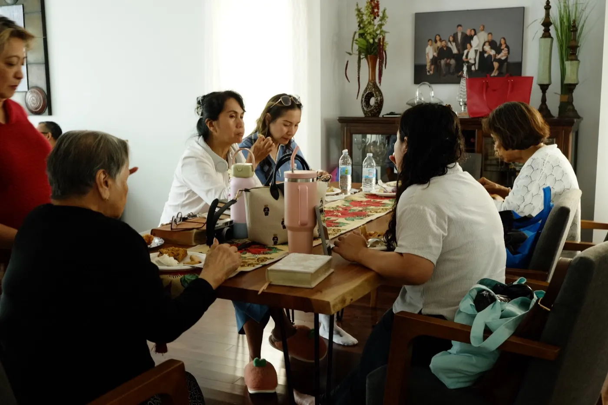
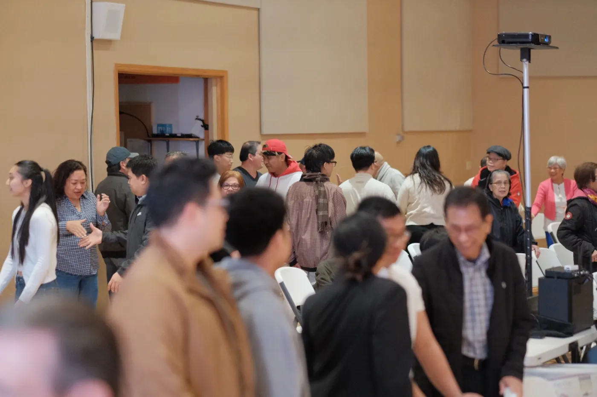

Youth & young adults
Youth ministry led by Pastor Jaden, and Young Adult Bible Study for ages 18 and up, mostly in homes.
Find your groupA Christian church for everyone in north Winnipeg. Wherever you are on your journey, you are welcome here.





Faith Life began in 2017 in a member’s living room with a few families. Today about 100 people gather every Sunday afternoon at 427 Matheson Avenue, and we welcome people of every background.
Our heart is to glorify God, proclaim the gospel of Jesus Christ, and build up His people in truth and love, through worship, the Word, prayer, and fellowship.
Find the group that fits your season of life. Every group is free.

Youth ministry led by Pastor Jaden, and Young Adult Bible Study for ages 18 and up, mostly in homes.
Find your group
New to faith or want a refresher? Discovery Bible Study covers the foundations, with room for honest questions.
Explore Discovery
Sunday School for kids up to grade 4, Young Couple Fellowship, and Men’s and Women’s Fellowship & Bible Study.
See all ministriesReady to call Faith Life home? Our free membership path runs twice a year, in late January and May.
About Growth TrackGather with us, take your next step, and stay connected with our church family.
Whether you are exploring faith or looking for a church home, here is what to expect when you visit.